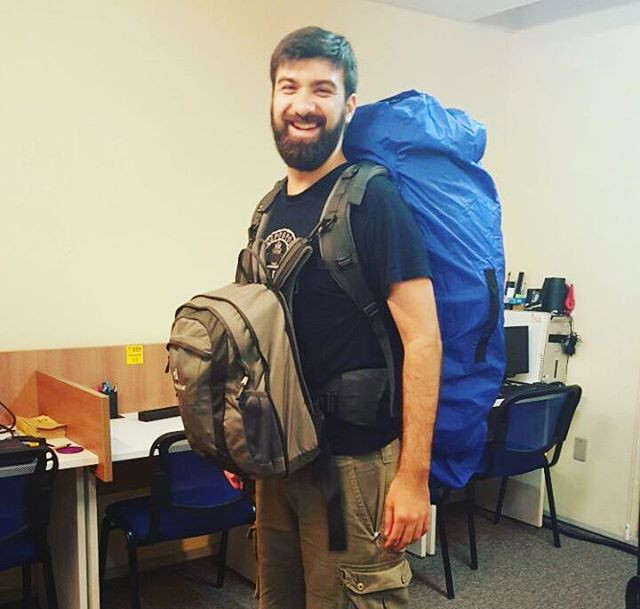

Lógica de Programação em Python
Turicas aka Álvaro Justen
12ª Conferência da Comunidade Python Brasil
13 de outubro de 2016 - Florianópolis/SC

escoladedados.org
Turicas, prazer! =)
Sigam-me os bons:
{twitter,
github,
youtube,
slideshare,
instagram}
/turicas
alvaro@CursoDeArduino.com.br
turicas.info
Nômade Digital


cursodearduino.com.br


pythonic.cafe
youtube.com/c/PythonicCafe

generonumero.media
Python

Arduino


pythonquito.tk
Software Livre